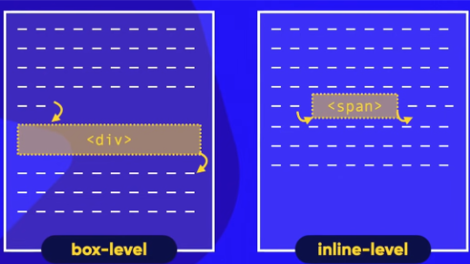
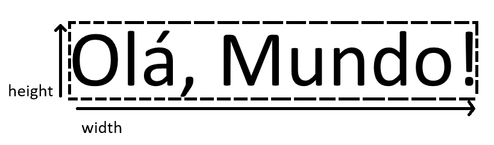
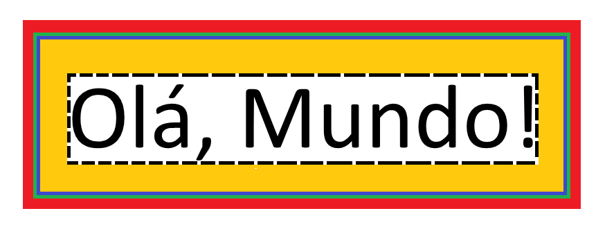

Dentro do seu editor...
Isso irá gerar o código base do seu site. Lembre-se de mudar a lang="" para a linguagem de seu usuário.
Use o seu explorador de arquivos para abrir o site em um navegador.
Entre a tag <title> coloque o nome desejado que será mostrado acima do site.
Após uma alteração recarregue a página ou tecle F5 para ela aparecer
Para colocar títulos em sites é necessario saber que eles seguem uma hierarquia sendo o <h1> o mais importante e o <h6> o menos importante.
A maior parte do conteúdo do site são parágrafos como esse, para colocalos usamos a tag <p>.
No meio de parágrafos podemos pular linhas utilizando a tag <br>
Símbolos especiais precisam de códigos especiais para serem colocados, segue uma tabela:
Para colocar emojis use o código &#x mais o código do emoji, para descobrir o código acesse a: Emojipedia. Ache o emoji, vá as informações technicas e copie o código depois do 'U+' e adicione ';' no final. 😎
Para colocar imagens use a tag <img>, no campo src='' coloque o endereço da imagem e no campo alt='' um nome de fácil identificação.
Dependo do tamanho da tela do usuário a imagem deve se adaptar para uma melhor experiência, para isso use a tag <picture>, dentro dela use a tag <img> e escolha a menor imagem, depois na linha de cima adicione 'source:media:type' então escolha a partir de que tamanho a outra imagem será exibida, qual imagem será exibida e o tipo da imagem
Para colocar favicons na parte 'head' do seu site coloque 'link:favicon', no campo 'href=' coloque o endereço de imagem.
Para colocar alguns textos especiais use as tags abaixo:
script
A sociedade está afundando cada vez mais
Para colocar listas ordenadas use <ol> e para os itens da lista use <li>, elas apareceram assim:
Para colocar listas não ordenadas use <ul> e para os itens <li>, elas apareceram assim:
Para colocarmos listas de definições use <dl>, para títulos <dt> e para itens <dd>. Elas apareceram assim:
Para colocar links use <a>, no campo href="" cole o link de onde quer acessar, e entre os <a></a> escreva uma mensagem ou imagem que o usuário clicará.
Quando o link for para outro site é bom que informar ao mecanismo de pesquisa que aquilo está além do nosso site, para isso usamos dentro das <> rel="external" e para que ele abra o link em uma nova guia use target="_blank"
Um site pode ter diferentes páginas. Criamos 2 arquivos .html e usamos a tag <a> para transitar entre elas
Para colocar áudios usamos <audio>, no campo src="" cole o link do áudio. Também temos configurações adicionais como: controls que permite dar play, pausar e alterar a velocidade do áudio; loop que quando o áudio acaba ele toca de novo
Para colocar vídeos usamos <video>, no campo src="" cole o link do vídeo. Também podemos configurar o tamanho do player com width=""; poster para definir uma "thumb" para o vídeo, além do loop e controls
CSS é uma linguagem de marcação igual a linguagem HTML, porém ela é referente ao estilo e as partes visuais do site. Ela te permite alterar diversos atributos de um tag.
Existem 3 tipos:
Dentro dos parênteses angulares <> de uma tag coloque: style=""
Na parte 'head' do seu site coloque <style>, e dentro dela o nome da tag que você que alterar e entre chaves os atributos
Na parte 'head' do do site coloque 'link:css' e crie o arquivo .css, depois adicione '@charset "UTF-8"' nele você poderá alterar todo o estilo do seu site e linka-lo a outras páginas do seu site para que todas fiquem com o mesmo padrão de estilo.
Elas seguem um hierarquia em que a Inline é a mais importante seguido da Interna e depois a Externa
Podemos alterar a cor de diversas coisas no nosso site como a de textos usando 'color:'
Podemos alterar a cor do fundo de diferentes coisas usando 'background-color:'
Podemos trocar o fundo para gradientes de cor usando 'background-image: linear-gradient()' indicando a direção do gradiente e 2 ou mais cores separadas por vígula.
Para usar fontes locais em sites use 'font-family:' seguido da fonte.
Nem sempre as fontes pré-instaladas no nosso computador serão boas o bastante. Então podemos baixar fontes de outro lugar e colocar em nosso site.
Para coloca-las vamos na parte 'style' do código e colocamos '@font-face' e teclamos Enter. Em 'font-family:""' de um nome para a fonte. em 'url()' coloque o endereço e em 'format()' o tipo de fonte
Existem 2 tipos: opentype (otf), truetype (ttf)
Para alinhar textos use 'text-align:', e um dos alinhamentos: left, right, center ou justify.
Id’s são usados para alterar uma tag específica em meio a outras tags do mesmo tipo
Ex: <h1 id="principal">
Dentro da tag <style> para especificar um id use '#', Ex: h1#principal{}
“ATENÇÃO! não podemos usar o mesmo id em tags diferentes sendo elas do mesmo tipo ou não”
Classes são usadas para alterar várias tags do mesmo tipo
Ex: Tenho 4 parágrafos e quero que 2 fiquem azuis então uso <p class=”destaque”>, e no campo <style> use:
Pseudo-Classes estão sempre relacionadas a uma classe ou a um tag (não uma tag específica, mas todas as tags que forem iguais)
Podemos alterar uma classe inteira ou todas as tags que forem iguais dependendo de seu estado como por exemplo o:
Hover significa que o mouse está em cima da tag, na parte de style mandamos o texto ficar escondido 'display: none;' até que coloquemos o mouse em cima dele 'display: block;'.
Caixas são áreas invisíveis em volta de todos os elementos visuais de um site. Existem 2 tipos: box-level e inline-level

Elas tem duas características Height é a altura e Width é a largura.

Envolta delas existem 4 divisões:

Para organizar melhor o conteúdo do nosso site podemos usar as Grouping tags:
Em português cabeçalho, é onde botamos o titulo principal do site e todos os links.
Utilizado para organizar o cabeçalho
O site em si, todo o conteúdo fica aqui e pode ser subidividido por outras tags.
Em português sessão, serve para separar os assuntos apresentados.
Em português Artigo, se refere ao tema de sua sessão
Subdivisão do Artigo
Em português rodapé, onde ficam as informações de quem fez o site, leis de copyright e outras coisas.
Para mudar o fundo de um site para uma imagem de nossa escolha usamos 'background-image: url('');' e colocamos o url da imagem entre as aspas, podendo ser uma imagem local ou da web.
Se a imagem for muito pequena ela irá se repetir para cobrir toda a extensão da tela, podemos mandar ela não se repetir usando: 'background-repeat: no-repeat;'
Podemos escolher o tamanho do fundo usando 'background-size:'
Para escolhermos a posição da imagem usamos: 'background-position:' seguido de center, right, left, top e bottom e para colocarmos nas diagonais combinamos right ou left com top ou bottom
Caso a página crie uma barra de rolagem mas queremos que a imagem fique parada use o 'background-attachment: fixed'
Shorthand: color > image > position > repeat > attachment; o size não pode ser utilizado na shorthad devido a um bug da linguagem. Pois então coloque separado
Se colocarmos uma caixa dentro da outra e dermos o valor da 'position:' da caixa de fora(MAIOR) como 'relative' e da caixa de dentro(MENOR) como 'absolute' podemos usar 'left' e 'top' para movimentar a caixa menor dentro da caixa maior